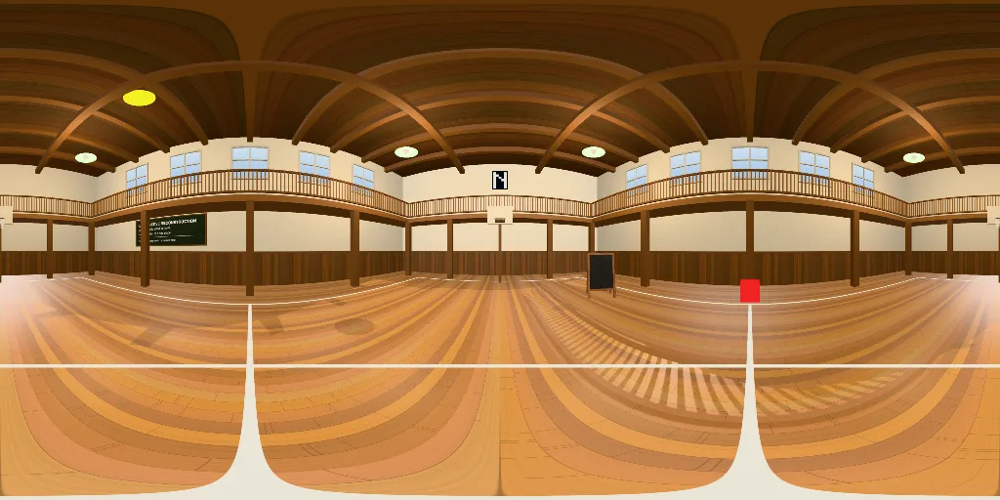

360 degree view
Focus the view, then use the arrow keys to turn, plus and minus to zoom, Home to reset. Or use the buttons below, or the list of points of interest.

Illustrative reconstruction (spike). A generic stand-in room. It is not a picture of any real place.
Focus the view, then use the arrow keys to turn, plus and minus to zoom, Home to reset. Or use the buttons below, or the list of points of interest.
